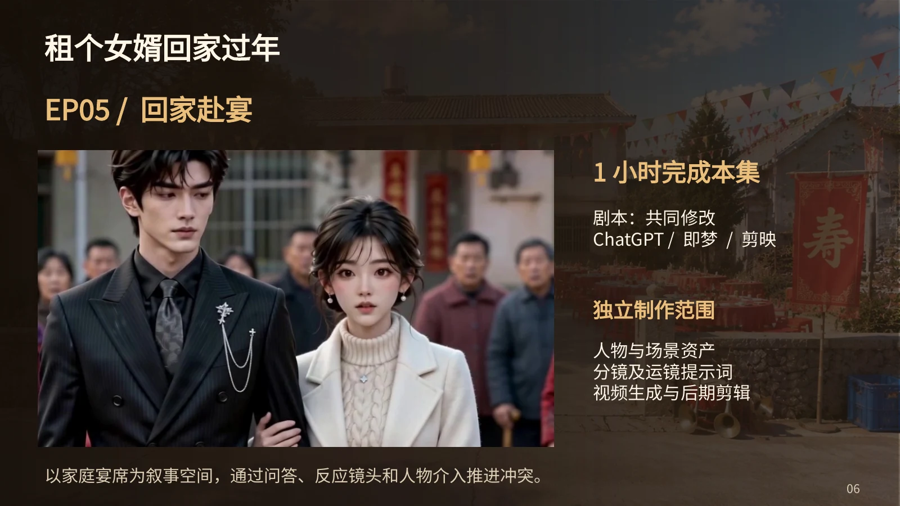
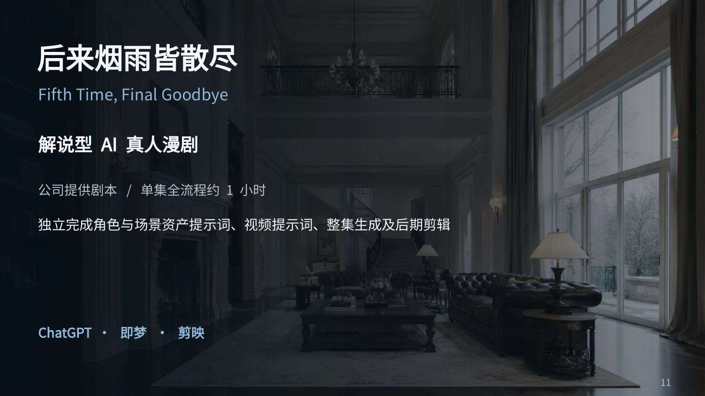

AIGC 视频设计师｜广告创意与产品宣传片方向探索 AI 影像、叙事与设计的更多可能。
漫剧广告 / 个人概念作品 · 约 64 秒
产品宣传 / 个人概念作品 · 约 90 秒
产品广告 / 个人概念作品 · 约 39 秒
以上为个人练习及概念创作，非品牌官方广告，无商业合作关系。三部个人作品均支持站内直接播放，也可单独打开视频观看。
古装轻喜剧中的产品功能表达
公司实习项目 · 查看制作过程 →

EP05 / 回家赴宴

Fifth Time, Final Goodbye / 解说型 AI 真人漫剧
真人漫剧以图文呈现人物资产、分镜与剪辑思路；卡萨帝项目同时提供完整成片播放。
莲藕仿生藕粉可降解包装设计
大学设计案例 · 独立完成 · PS / C4D查看设计思路、方案迭代与视觉呈现 →
我是孔大山，专注于 AIGC 视频设计、广告创意与产品宣传片制作。具备海外真人漫剧、国内真人漫剧及产品广告漫剧制作经历。能够依据剧本完成人物与场景生成、视频与音频制作，以及最终剪辑交付。
创作工具：ChatGPT · Midjourney · AI 画布 · 即梦 · MiniMax · 剪映